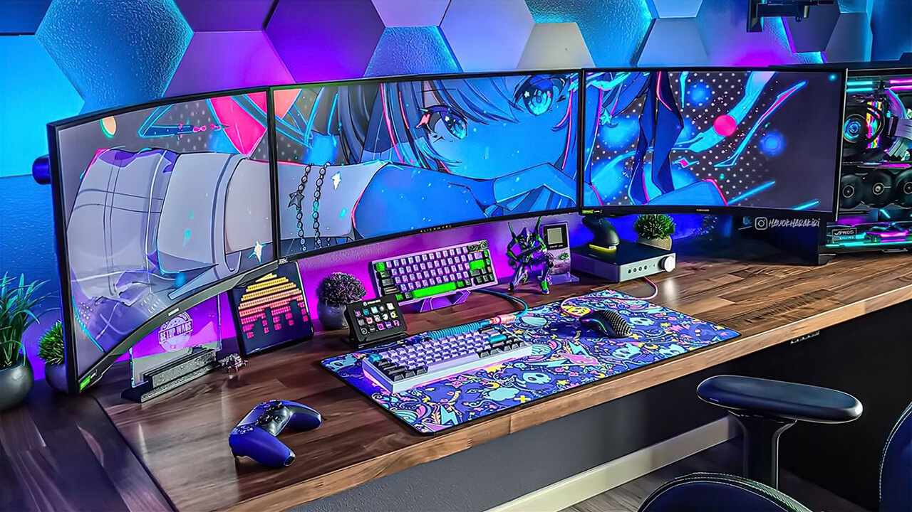

Portfolio Nassim Dadda
B.U.T Passerelle Technologie de l’Information Université Sorbonne Paris Nord
Année universitaire 2025/2026

Informations & contacts professionnels
Nom : Nassim Dadda
Formation : B.U.T Passerelle Technologie de l’Information Université Sorbonne Paris Nord
Liens professionnels
Introduction
Au cours de cette année en B.U.T Passerelle Technologie de l’Information, j’ai eu l’opportunité de consolider et d’élargir mes compétences en informatique dans une formation intensive mêlant théorie, pratique et immersion professionnelle. Cette année, structurée autour de cinq compétences essentielles réaliser un développement d’application, optimiser des applications informatiques, administrer des systèmes informatiques communicants complexes, gérer des données de l’information et conduire un projet m’a permis de construire un profil polyvalent, capable d’aborder des projets techniques variés.
Les SAÉ ont joué un rôle central dans cette progression : l’audit et l’analyse exploratoire d’un réseau social m’ont plongé dans la gestion de données complexes, tandis que la supervision audio distribuée m’a initié à l’architecture de systèmes communicants. Mon stage chez Theraligne / Theraform a été un tournant majeur : pendant huit semaines, j’ai travaillé en télétravail complet sur deux projets web réels, avec des responsabilités importantes et une autonomie encadrée.
Ce portfolio est l’occasion de revenir sur cette année dense, d’analyser mes progrès, de mettre en lumière les compétences que j’ai développées, et de montrer comment cette formation et ce stage ont façonné mon projet professionnel.
Compétence 1 : Réaliser un développement d’application
Outils mobilisés
- WordPress (Elementor Pro, Divi)
- HTML / CSS / JavaScript
- Python (Pandas, NumPy)
- Git / GitHub
- VS Code
Expériences
SAÉ SD : développement de scripts Python pour nettoyer et analyser un dataset complexe (5 000 lignes, 39 variables).
SAÉ INFO : conception d’un pilote de supervision audio pour des lecteurs distants.
Stage : développement et refonte de deux sites WordPress (Theraform et Modérateur d’Appétit), avec corrections de bugs et création de nouvelles sections.
Acquis
- Production de code propre et structuré.
- Développement de fonctionnalités web concrètes.
- Capacité à mener une solution complète (analyse → développement → tests → déploiement).
Analyse critique
Points forts : autonomie, code lisible, compréhension rapide des problèmes techniques.
Points de vigilance : documentation parfois trop courte, gestion du temps à optimiser.
Acquis pour la suite : structurer davantage les projets, tester plus tôt, documenter régulièrement.
Compétence 2 : Optimiser des applications informatiques
Outils mobilisés
- WordPress (optimisation responsive, correction de bugs)
- Python (data cleaning, modélisation)
- Matplotlib / Seaborn
Expériences
SAÉ SD : correction d’erreurs critiques, imputation, détection de biais métier (corrélation parfaite likes ↔ engagement_score).
SAÉ INFO : optimisation de la continuité de service et des flux Serveur ↔ Lecteurs.
Stage : optimisation du responsive, résolution de bugs en cascade, amélioration du design et de la cohérence visuelle.
Acquis
- Détection et correction d’anomalies complexes.
- Maîtrise du responsive multi‑device.
- Amélioration de la performance et de la cohérence globale des sites.
Analyse critique
Points forts : réactivité, autonomie, force de proposition.
Points de vigilance : tendance à perfectionner trop le design.
Acquis pour la suite : mieux documenter les optimisations, structurer les corrections avant application.
Compétence 3 : Administrer des systèmes informatiques communicants complexes
Outils mobilisés
- WordPress (administration, extensions, gestion des accès)
- Python (audit de données)
- Drive partagé, GitHub
Expériences
SAÉ INFO : supervision en temps réel des lecteurs distants, gestion des urgences, logs, rôles utilisateurs.
SAÉ SD : audit de cohérence d’un dataset complexe.
Stage : gestion des comptes administrateurs, configuration des extensions, supervision du fonctionnement général des sites.
Acquis
- Administration d’environnements web complets.
- Gestion des accès et de la sécurité.
- Supervision et résolution d’incidents techniques.
Analyse critique
Points forts : rigueur, autonomie, professionnalisme (20/20 en rigueur et ponctualité).
Points de vigilance : documentation des actions d’administration à renforcer.
Acquis pour la suite : structurer les environnements avant modification, tester systématiquement les changements.
Compétence 4 : Gérer des données de l’information
Outils mobilisés
- Python (Pandas, NumPy)
- Matplotlib / Seaborn
- Méthodes statistiques (IQR, médiane, corrélations, régression logarithmique)
Expériences
SAÉ SD : nettoyage, imputation, modélisation, détection de biais métier, data mining (Easter Egg “POWER” via transformation géométrique des coordonnées).
Stage : gestion de données WordPress (contenus, paramètres), analyse de logs et d’incohérences.
Acquis
- Maîtrise du data cleaning sur un dataset bruité.
- Analyse statistique avancée et détection de biais.
- Capacité à transformer des données brutes en information exploitable.
Analyse critique
Points forts : rigueur, créativité dans le data mining.
Points de vigilance : synthèse des résultats parfois trop longue.
Acquis pour la suite : approfondir la modélisation statistique, mieux structurer les rapports d’analyse.
Compétence 5 : Conduire un projet
Outils mobilisés
- WhatsApp, appels réguliers
- Drive partagé
- Carnet de tâches personnel
- Git / GitHub
Expériences
SAÉ SD : conduite d’un audit complet (nettoyage, analyse, visualisation, interprétation).
SAÉ INFO : pilotage d’un système distribué (flux, urgences, supervision).
Stage : conduite de deux projets web successifs, organisation des journées, reporting quotidien, validations systématiques.
Acquis
- Organisation, planification et priorisation des tâches.
- Coordination et communication professionnelle.
- Gestion des imprévus et des incidents techniques.
Analyse critique
Points forts : autonomie, force de proposition, communication fluide malgré le télétravail.
Points de vigilance : surcharge volontaire (travail le week‑end), documentation à renforcer.
Acquis pour la suite : mieux équilibrer l’investissement, structurer les étapes de conduite, tester plus tôt.
Volet stage : Analyse professionnelle
Présentation du stage
Mon stage s’est déroulé au sein de Theraligne, entreprise spécialisée dans l’amincissement naturel et le bien‑être, opérant sous la marque Theraform. J’ai travaillé en télétravail complet, au sein d’une petite équipe composée de mon tuteur et de sa collaboratrice.

Missions réalisées
Projet 1 – Site Theraform : correction de bugs, amélioration du design, optimisation du responsive, refonte de sections.
Projet 2 – Site Modérateur d’Appétit : conception de pages, développement de fonctionnalités, structuration du code, corrections liées aux extensions.
Tâches transversales : gestion des accès administrateurs, organisation du drive, reporting quotidien via WhatsApp, carnet de tâches.
Compétences mobilisées
- Développement web (WordPress, HTML/CSS/JS).
- Optimisation (responsive, performance, cohérence).
- Administration (accès, extensions, supervision).
- Gestion de données (contenus, logs, ressources).
- Conduite de projet (organisation, priorisation, validation).
Analyse critique
Points forts : autonomie, rigueur, communication, force de proposition.
Points de vigilance : documentation, gestion du temps sur les tâches longues.
Difficultés : bugs en cascade, incohérences multi‑device, limitations techniques de certaines extensions.
Bonnes surprises : confiance accordée dès les premiers jours, proximité de contact, environnement PME très adapté à ma manière de travailler.
Ce que le stage m’a appris
Ce stage m’a permis de comprendre la réalité du métier de développeur web, l’importance de la communication, la gestion des responsabilités dans une petite équipe, et la valeur d’un environnement professionnel humain, autonome et flexible. C’est le vrai “plus” que je retiens de cette année.
Conclusion
Cette année en B.U.T Passerelle Technologie de l’Information a été pour moi une expérience dense, contrastée, mais profondément enrichissante. La partie Science des Données, bien qu’intéressante à découvrir, ne correspond pas à ce que je souhaite faire plus tard. La partie informatique m’a permis de revoir des compétences techniques que j’avais déjà acquises en BTS SIO SLAM, parfois de manière moins claire, mais elle a confirmé mon intérêt pour le développement web.
Je ne regrette pas cette année : la vie étudiante m’avait manqué, et surtout, mon stage a été le véritable tournant. Travailler dans une PME, en télétravail, avec une proximité humaine, une communication directe et une autonomie réelle, m’a permis de comprendre exactement le type d’environnement professionnel dans lequel je veux évoluer.
Pour la suite, je souhaite poursuivre en BUT 3 Informatique, idéalement en alternance, afin de continuer à progresser dans un cadre professionnel concret, tout en approfondissant mes compétences techniques. Cette année m’a permis de mieux me connaître, de comprendre mes forces, mes limites et mes préférences, et de confirmer que l’informatique et en particulier le développement web est bien le domaine dans lequel je veux construire ma carrière.